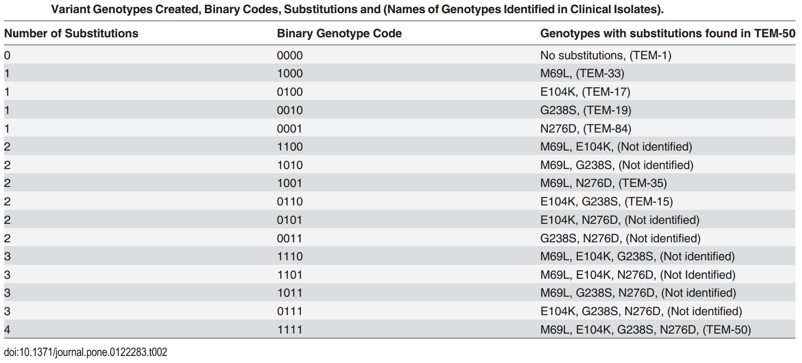
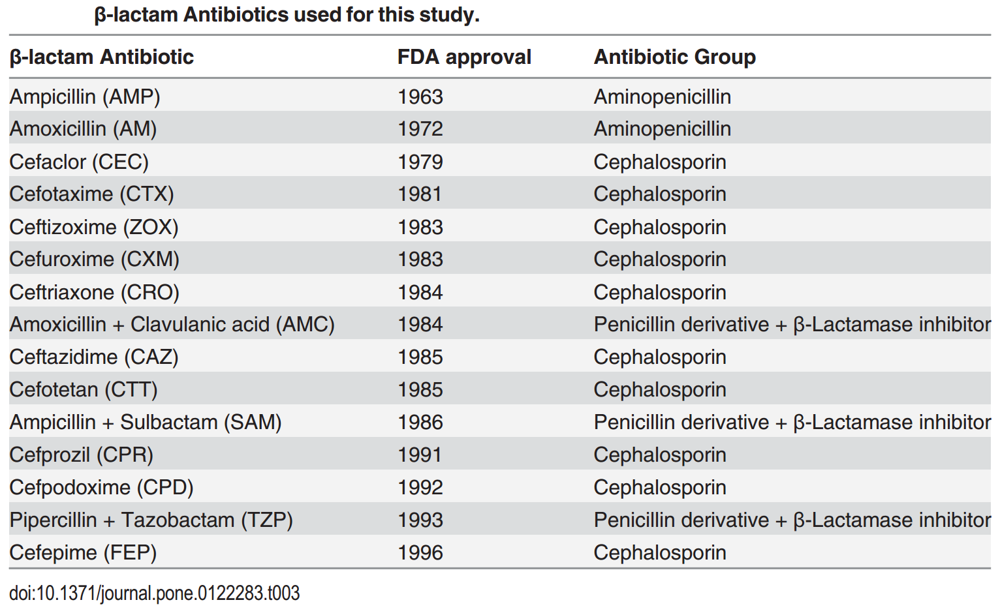
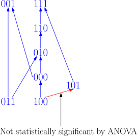
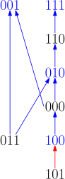

Fitness landscapes, genetic interactions, and inexact data
Alex Gavryushkin

24 April 2018
Throughout, we consider $n$ biallelic loci, for various values of $n$

Example: $n = 6$

Throughout, we consider $n$ biallelic loci, for different $n$.
That is, the set of genotypes is $\mathcal G = \{0,1\}^{n}$.
A fitness landscape is a function $w:\mathcal G \to \mathbb R^+$.
For $g \in \mathcal G$, $w(g)$ is called the fitness of genotype $g$ and denoted $w_g$.
Epistasis
is defined as the deviation from the additive expectation of allelic effects: $$u_{11} = w_{00} + w_{11} - (w_{01} + w_{10})$$Understanding three-way interactions
Marginal epistasis?
$\small u_{\color{blue}{0}11} = w_{\color{blue}{0}00} + w_{\color{blue}{1}00} + w_{\color{blue}{0}11} + w_{\color{blue}{1}11} − (w_{\color{blue}{0}01} + w_{\color{blue}{1}01}) − (w_{\color{blue}{0}10} + w_{\color{blue}{1}10})$
Total three-way interaction?
$\small u_{111} = w_{000} + w_{011} + w_{101} + w_{110} - (w_{001} + w_{010} + w_{100} + w_{111})$
Conditional epistasis?
$\small e = w_{\color{blue}{0}00} − w_{\color{blue}{0}01} − w_{\color{blue}{0}10} + w_{\color{blue}{0}11}$
Total mess!
(Algebraic) Geometry sorts out the mess!
$e = u_{011} + u_{111}$In general, the four interaction coordinates $$ u_{011}, u_{101}, u_{110}, u_{111} $$ allow to describe all possible kinds of interaction!
There are 20 types of interaction and they are known as circuits to Algebraic Geometry 111 students
Yep, we've got the list!
This is known as Beerenwinkel-Pachter-Sturmfels approach,
which provides a complete picture of interactions!BUT
the approach is
-
based on the availability of fitness measurements
-
computationally feasible for up to four loci
Hence, we come to two research questions
Problem 1: What if no (credible) fitness measurements are available?
 Image: Wikipedia
Image: Wikipedia
Mutation fitness graph

Ogbunugafor et al. Malar. J. 2016
Rank orders. The simplest case.
$\small u_{11} = w_{00} + w_{11} - (w_{01} + w_{10})$
Exercise: Dyck word algorithm
$$ \begin{align} \small u_{011} =~ & w_{000} + w_{100} + w_{011} + w_{111} − \\ & w_{001} - w_{101} − w_{010} - w_{110} \end{align} $$
$$ w_{111} > w_{011} > w_{101} > w_{010} > w_{000} > w_{110} > w_{100} > w_{001} $$
$$ w_{111} > w_{011} > w_{100} > w_{000} > w_{001} > w_{101} > w_{010} > w_{110} $$
A way to quantify uncertainties!
Mutation graph
Connection between rank orders and mutation graphs

Applications
-
HIV-1
-
Antibiotic resistance
-
Gut microbiome (with Will Ludington, UC Berkeley)
-
Synthetic lethality
-
Knockdown cell lines
Methodologically, this allows us to advise further measurements (experiments) for incomplete data sets, thus reducing the number of potential experiments significantly.
Example: antibiotic resistance
Example: antibiotic resistance
Example: antibiotic resistance

Example: antibiotic resistance
Mutation graph

Mutation graph

Mutation graph

Mutation graph
Mutation graph
Results in more detail
Efficient methods for:- Circuit interaction inference (including epistasis and three-way interaction) for total orders
- Complete analysis of partial orders (including mutation graphs) with "distance to interaction" inference
- Suggestions for possible completions in case of missing data and/or high uncertainty
Software (pre-release stage):
https://github.com/gavruskin/fitlands
Problem 2: What if the number of genes (loci) is 20,822?
- 2^20822 of conditional epistases?
- 2^20822 measurements to estimate marginal epistasis?
Not in this life
Concrete example: genome-wide RNAi perturbation screens
20,822 genes, 90,000 "trials" (siRNA's)
RNAi perturbation screen

Two ways out
- Isolate a small number of "interesting" genes, e.g. main fitness drivers (like we did in the HIV study)
- Add statistical assumptions, for example:
-
Ignore higher-order interactions
- Structural hypotheses: "It rarely make sense to have interactions without main effects"—Lim and Hastie
-
(Ongoing work with Schmich, Szczurek, Beerenwinkel, et al.)
Want to learn more?
We've got you covered!- All my talks (including this one) are here:
https://lab.gavruskin.com/talks
- Preprints are here:
https://lab.gavruskin.com/publications
- Software (and manuscripts in-progress) here:
https://github.com/gavruskin
- Follow @gavruskin on Twitter
Acknowledgements
- You
- Niko Beerenwinkel, ETH Zürich
- Bernd Sturmfels, Max Planck Institute Leipzig
- Kristina Crona, American University
- Devin Greene, American University
- Lisa Lamberti, ETH Zürich
- Caitlin Lienkaemper, Penn State